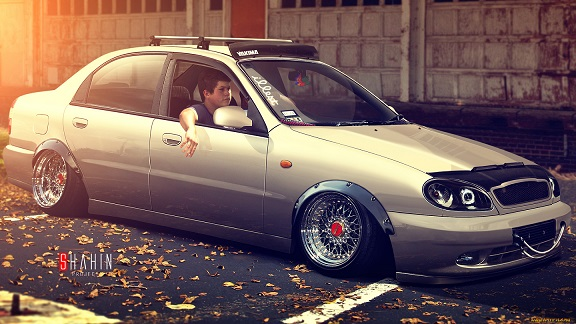

Daewoo Lanos — лёгкий (субкомпактный) переднеприводной автомобиль с вариантами кузова седан или хетчбэк, разработанный и изначально производившийся компанией Daewoo, был впервые представлен на Женевском автосалоне в 1997 году под именем Daewoo Lanos как замена Daewoo Nexia. Был спроектирован в сотрудничестве с рядом авторитетных германских и английских инжиниринговых компаний научно-исследовательским центром Daewoo в Уокинге. Кузов автомобиля был разработан итальянским дизайнером Джорджетто Джуджаро (ItalDesign). Со вхождением Daewoo в концерн General Motors 30 апреля 2002 года автомобиль начали продавать под маркой Chevrolet. Производство Ланос завершилось в декабре 2017 года[3].Также автомобиль брали в сборку такие страны: Россия, Украина, Казахстан, Южная Корея и Египет